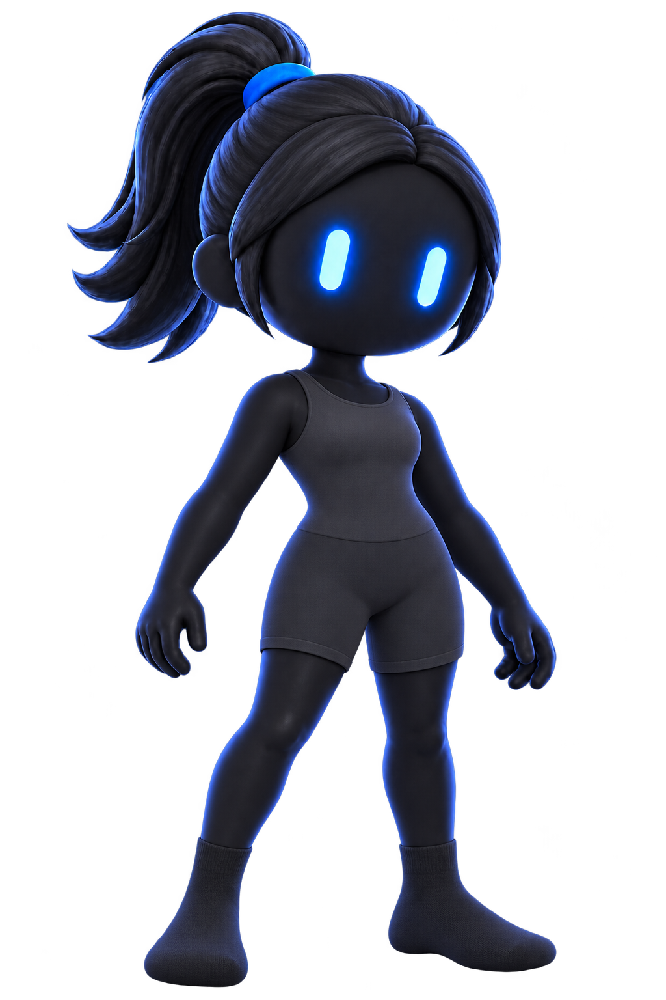
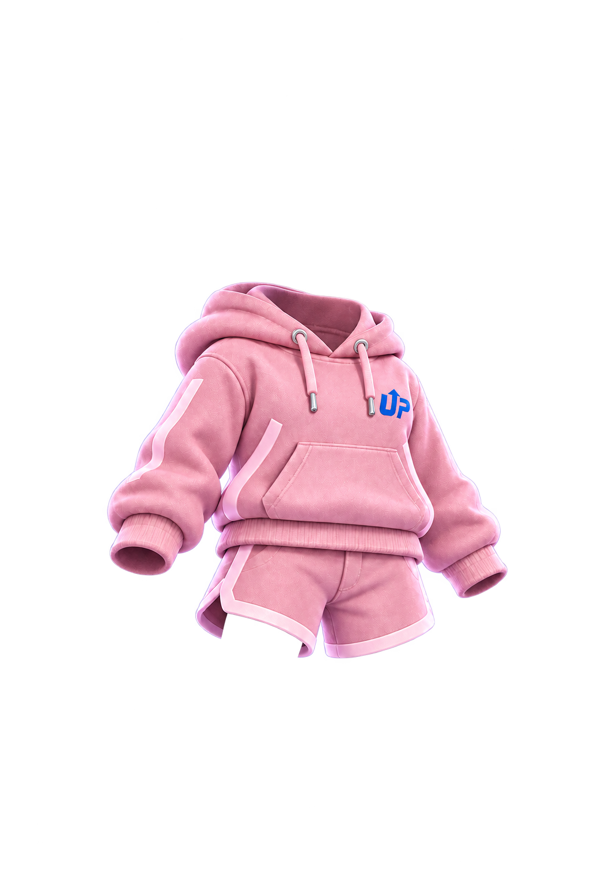
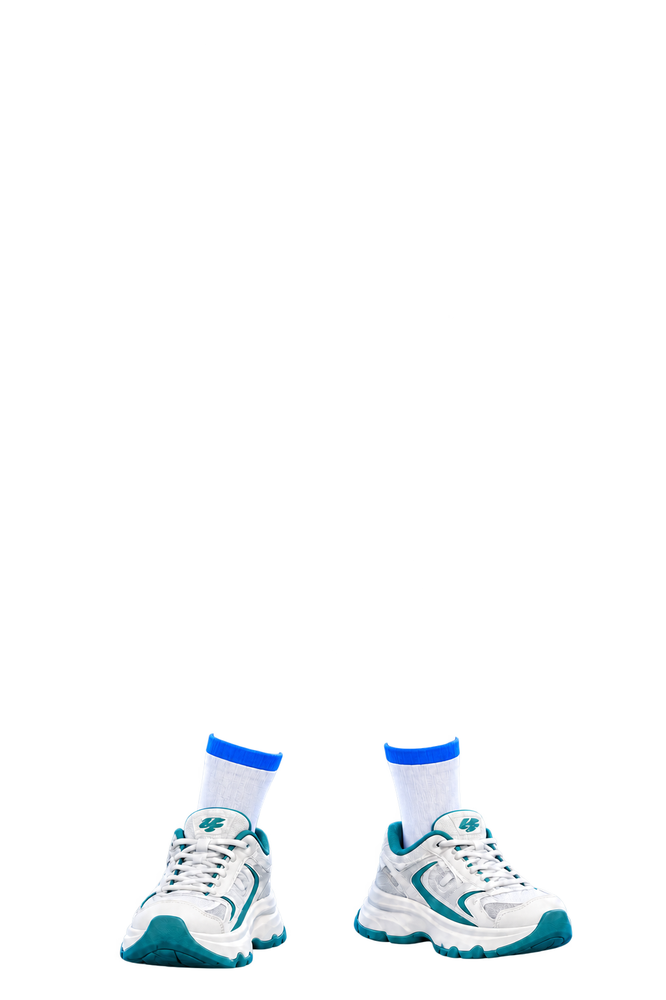
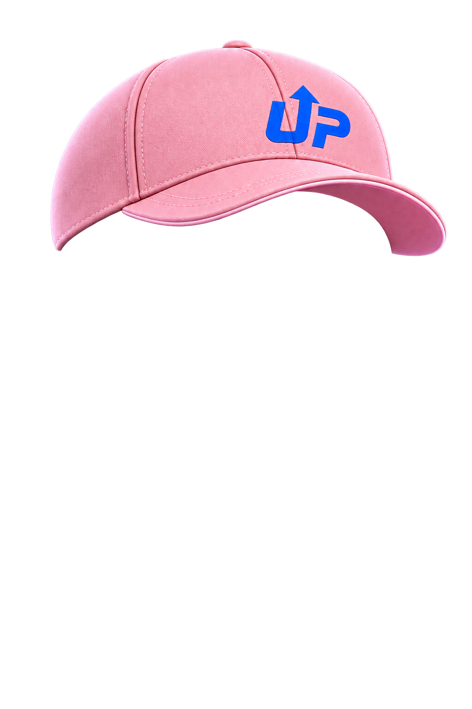
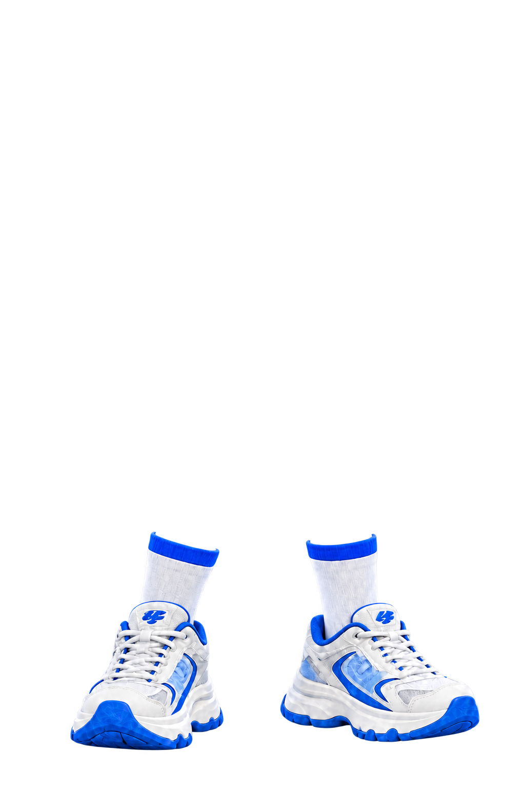
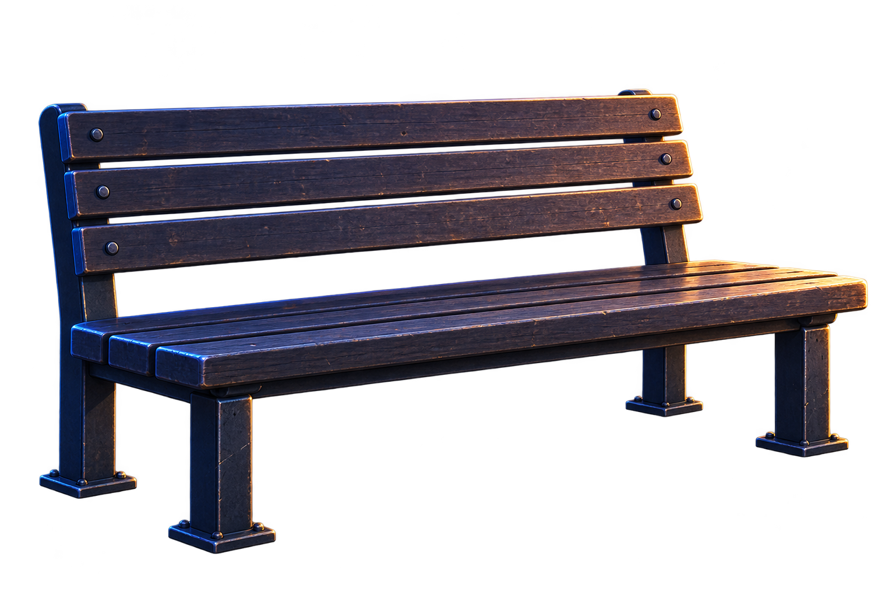
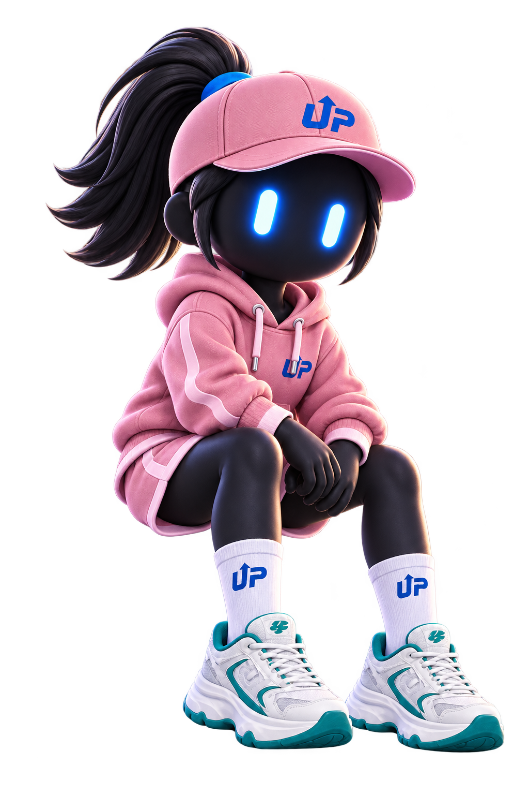

StepUp 분리 자산 검토
밤 + 기존 전신
기존 2차 캐릭터를 신규 배경 위에 배치한 기준 비교.
새벽 + 핑크/청록




4개 독립 레이어 · 시험새벽 + 라벤더/청록
모자 색은 독립 슬롯이며 현재 핑크만 생성됨.
새벽 + 핑크/워터
같은 몸체에서 신발만 교체한 시험.
새벽 + 라벤더/워터
의상·신발 교체 · 시험
교차 조합 4종의 마지막 시험.
새벽 + 핑크/워터 v3

교정 재시도 · 정렬 검수밤 + 달리기 LUMI
러닝 화면의 배경을 바꿔도 캐릭터가 유지되는지 확인.
새벽 + 앉기 LUMI + 벤치


분리 벤치 · 시험새벽 + 앉기 RUNO + 벤치
두 성별에서 벤치 위치가 맞는지 확인.